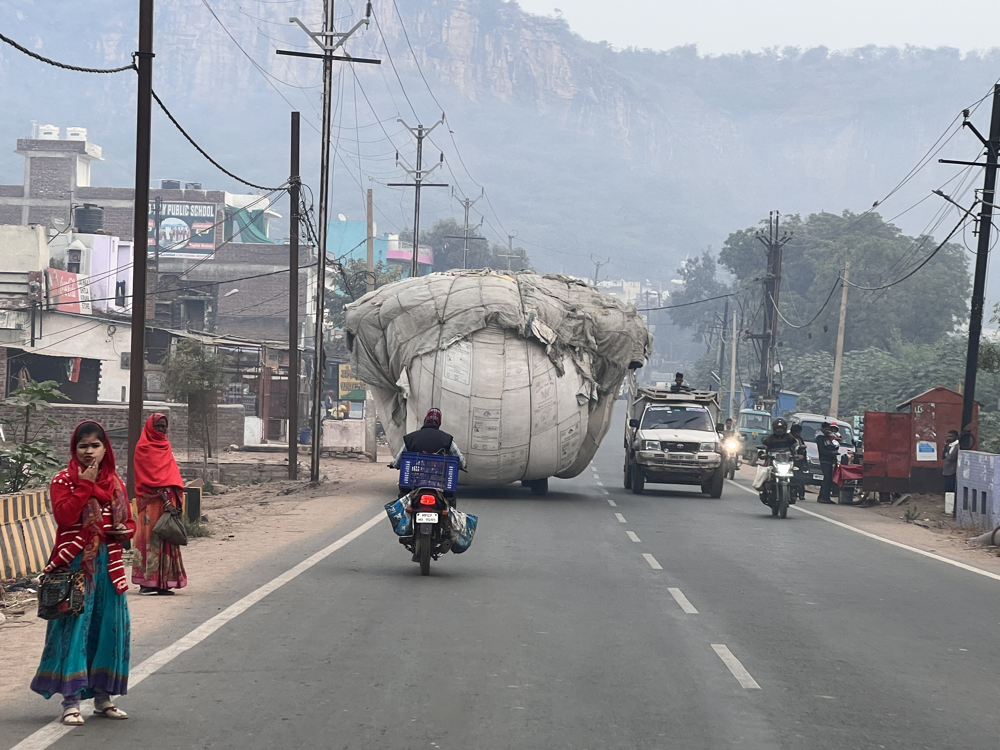
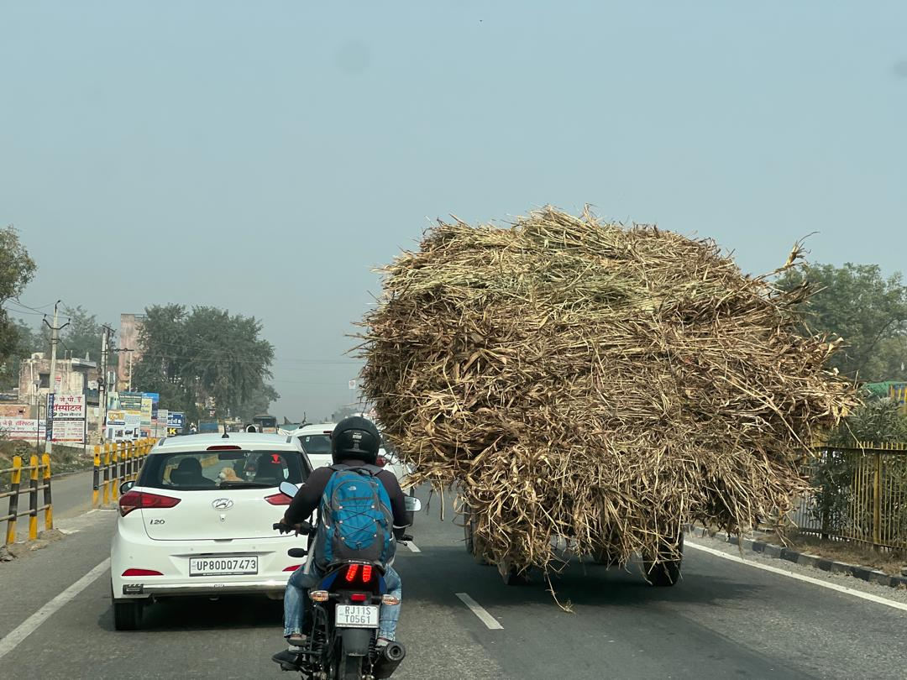
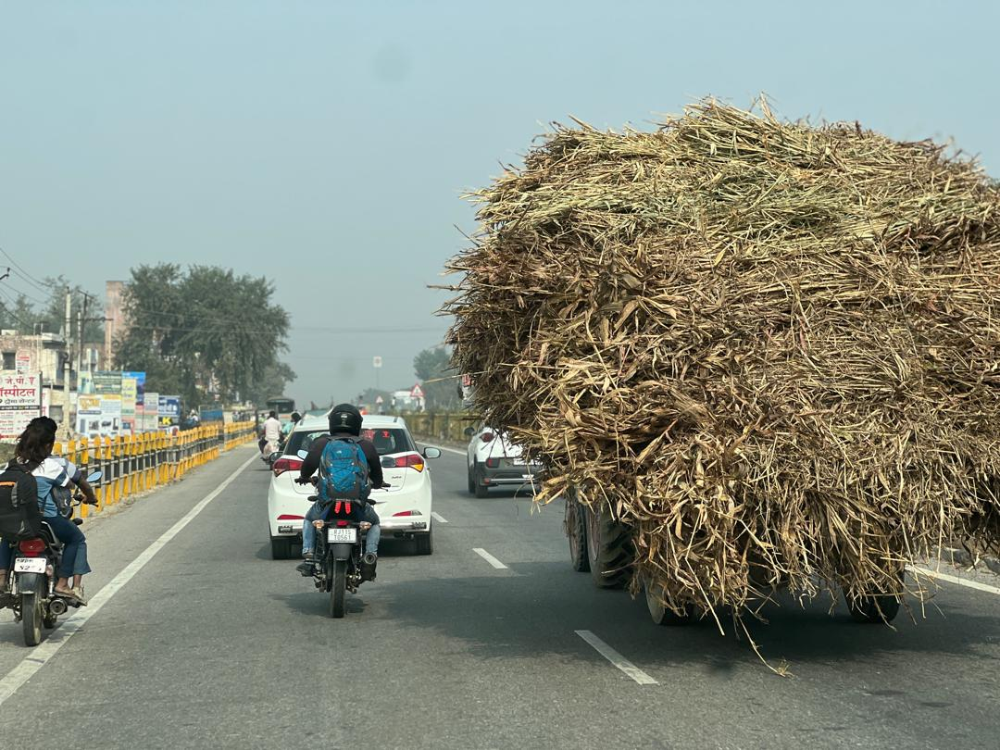

Real Story · 中文
26/11/2023，我在印度路上开车时，突然看到它。
那天我没有特别要拍什么。 只是一直开，一直看路，一直让 Toyotaki 跟着车流往前走。
然后我突然看到前面出现一个巨大的东西。
它不像一台车。 也不像普通货物。 它像一座被灰白布料包起来的小山，慢慢在公路上移动。
电线在头顶交错，远处是淡淡的山影。 路边有人走路，摩托车经过，拖拉机继续往前。 所有人好像都很习惯。 只有我这个外来者觉得：这到底是什么东西？
也许它只是农产品，也许是纤维，也许是一些我不知道名字的货物。 但在那一刻，它对我来说不是货物。 它是印度路上的一种奇观。
一座会移动的小山。 一只被绑起来的灰色巨兽。 一个没有人解释、但所有人都自然绕过去的日常场景。
旅程里有很多记忆不是因为“我知道它是什么”才留下来。 有些刚好相反。 是因为我不知道它是什么，所以它一直留在脑子里。
English Memory Summary
Some sights stay because we never fully understand them.
On 26/11/2023, while driving through India, Tuzi suddenly saw an enormous fabric-wrapped load moving along the road.
It did not look like an ordinary vehicle or normal cargo. It looked like a small moving mountain, slowly sharing the road with motorcycles, tractors, pedestrians, electric poles, and distant hills.
Perhaps it was agricultural produce, fibre, cloth, or some kind of bundled cargo. Tuzi never knew exactly what it was. But that was part of why the memory stayed.
Some road memories remain not because we understand them, but because we do not.

Agra Also Had Mountains
不要以为会移动的小山，只会出现在乡村路。
同一天，26/11/2023，我在 Agra 也看到另一座会移动的小山。 这一次，它不是灰白布包起来的巨物，而是一大团 straw / hay， 像一座干草山一样挤在城市道路上。
旁边是普通汽车、摩托车、城市交通和路牌。 它没有因为进入城市就变得比较小，也没有因为路变窄就显得不好意思。 它就这样自然地占据一条车道，和大家一起往前走。
这也是印度路上让我着迷的地方。 你以为某种画面只会在 village area 出现， 结果下一刻，它就在 Agra 城里，跟现代车流一起出现。


Heart Statement
有些风景不是景点。
它只是突然出现在路上。
我不知道它是什么。 可是我知道，我看到它的那一刻，印度的路又一次提醒我：
世界不需要先被我理解，才可以让我惊讶。
The world does not need to be understood first before it can astonish me.